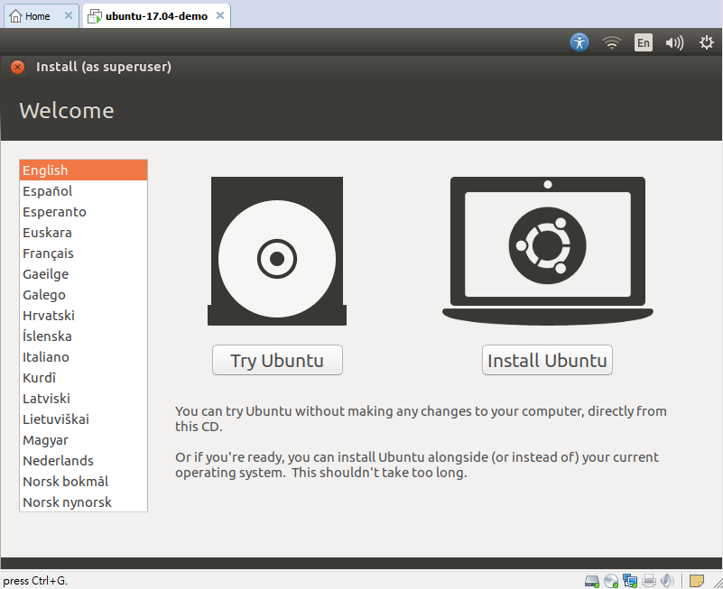

本文章僅輕輕帶過安裝流程與須注意的細節，故圖會比文還多，
基本操作只用圖片帶過，不多做說明，請見諒。
一、設定網路
一開始進入安裝畫面時如下

先設定網路，讓在安裝的過程中系統可以根據需求自行上網更新。
由於我使用PPPoE上網，故Connection Type選「DSL」
填好ISP業者配給你的上網帳號與密碼
最後記得要撥號上網
二、調整解析度
注意，一開始灌ubuntu時，我很直覺地選右邊的「Install Ubuntu」就直接裝了，
但是遇到分割硬碟選單時，卻因為解析度只有800*600，而一些選擇紐被裁切了，
滑鼠點不到、重要的選擇紐也不提供快捷鍵，研究了一下只能去猜按紐位置順序，
然後用「Tab」鍵去 tab 到想要的按紐，再用「Enter」鍵去點選該按紐，才能完成動作；
一整個超克難的，所以這一次我決定先調整解析度再來做安裝動作。
選擇「Try Ubuntu」
選擇system settings
選擇Displays
調整好解析度，並按下「Apply」紐
三、正式進入安裝流程
選好語言
我要做硬碟分割
我特別準備了250GB空間來建立分割
決定150GB劃為主分割區並掛載在root
剩下的掛到「home」結構裡
選好安裝開機程式的裝置後按「立刻安裝」
安裝完成後重新開機，enjoy it。

四、安裝輸入法
額外再說明一項，ubuntu 17.04裝完之後，預設沒有提供新注音、嘸蝦米可打，
頂多只有新酷音輸入法而已，對於習慣該輸入法的使用者來說是個傷腦筋的事，
上圖的什麼「漢語」輸入法根本打不出中文字，看來只能再來安裝輸入法了。
以最新的 fcitx 鍵盤輸入法系統上來安裝嘸蝦米輸入法為例
打開終端機輸入下面指令
- sudo apt install fcitx-table-boshiamy
安裝過程如下
安裝完後做登出登入，
發現已有嘸蝦米輸入法可選
另外利用m17n可取得注音符號輸入法
打開終端機輸入下面指令
- sudo apt-get install fcitx fcitx-m17n
可用的注音符號輸入法如下圖
參考資料：